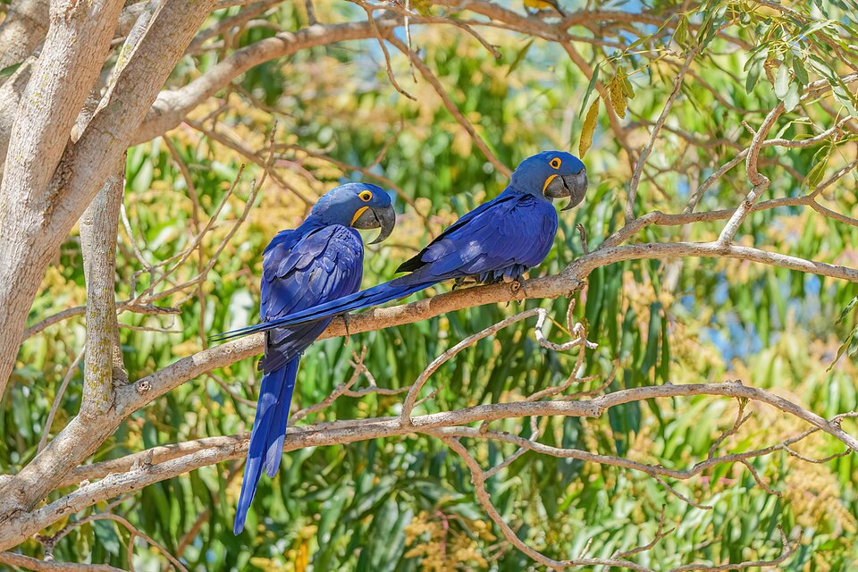

Quem somos
A ONG Arara Azul trabalha na preservação da fauna brasileira, promovendo ações de conservação, educação ambiental e conscientização da sociedade.

Entre em contato
E-mail: contato@ongararazul.org
Telefone: (83) 91234-5678
Localização: João Pessoa - PB